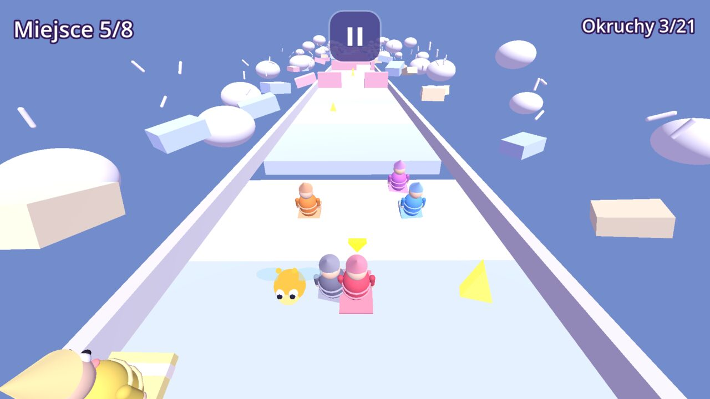
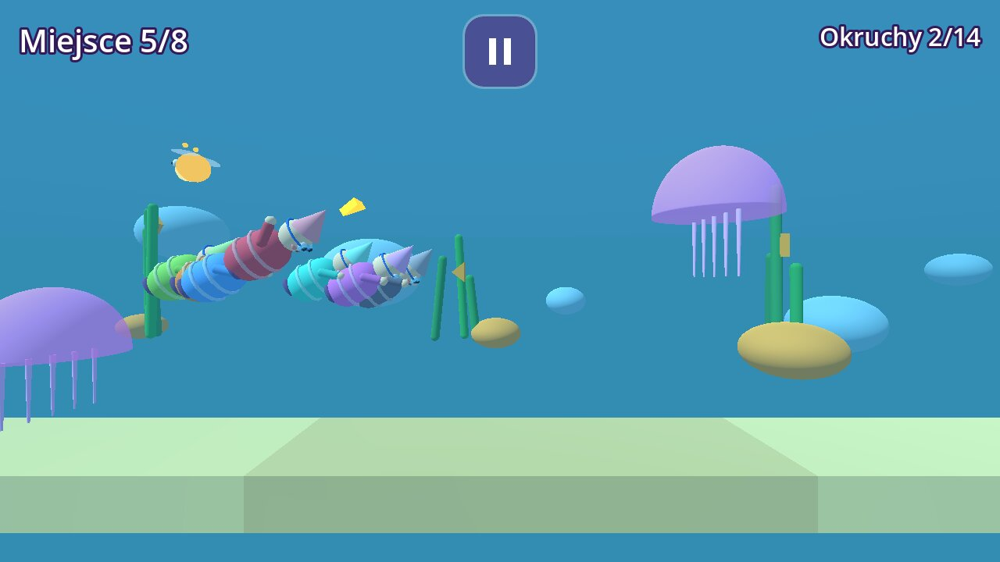

Szlafmyce
Wyścig we śnie
Wyścigi w piżamach przez zwariowane sny. Także we dwoje na jednym ekranie, bez reklam i bez internetu.
- dla dzieci 5–9 lat
- bez reklam
- bez internetu
- bez zbierania danych

O grze
Kiedy miasteczko zasypia, Szlafmyce ruszają w drogę. Biegną, zjeżdżają, lecą i płyną przez dziewięć zwariowanych snów.
W połowie wyścigu sen zmienia zdanie: grawitacja słabnie jak na Księżycu, podłoga zamienia się w galaretkę albo wszyscy rosną jak olbrzymy. Upadek kończy się fikołkiem, a nie porażką.
Najwięcej śmiechu jest we dwoje: rodzeństwo albo rodzic z dzieckiem grają razem na jednym telefonie lub tablecie.
Co jest w grze
Grajcie razem
Dwoje graczy na jednym ekranie. Bez kont i bez internetu.
9 snów, 4 sposoby zabawy
Bieg z przeszkodami, zjazd na poduszce, lot na balonikach i podwodny wyścig.
Własna postać
Dziecko wybiera kolor, buzię i piżamę. Gwiazdki odblokowują piżamy bohaterów.
Mój pokój i Ziewaki
Pamiątki ze snów, świetlik Lumek i album Ziewaków ukrytych w snach.
Sen dnia
Codziennie nowy tor, ten sam dla wszystkich tego dnia.
Bez czytania
Obrazki i dźwięki podpowiadają, co robić. Historia z Budzikiem opowiedziana obrazkami.
Tak to wygląda



Dla rodziców
- Bez reklam, bez zbierania danych, działa offline.
- Tryb na dobranoc: ustawiasz, ile czasu dziecko może grać.
- Dwa pierwsze sny są za darmo, a każdy płatny sen można podejrzeć.
- Pełna wersja to jednorazowy zakup, bez subskrypcji.
- Zakup, ustawienia i linki są za bramką dla rodziców.
Co nowego
Wersja 1.0.0 (10 listopada 2026, testy wewnętrzne)
- Premiera! Szlafmyce wyruszają w drogę: dziewięć snów do przebiegnięcia, każdy z własną zabawą.
- Gra we dwoje na jednym telefonie, tryb Maluch dla najmłodszych i tryb na dobranoc dla rodziców.
- Bez reklam, gra działa bez internetu. Dwa sny za darmo, resztę odblokowuje jeden zakup w strefie rodzica.
Wersja 0.2.0 (9 listopada 2026, testy wewnętrzne)
- Pierwsza wersja testowa: jeden sen, wyścig z siedmioma botami.
- Sen zmienia zasady w trakcie biegu: księżycowe skoki, galaretka, olbrzymy, turbo kapcie.
Wersja 0.1.0 (7 listopada 2026, testy wewnętrzne)
- Pierwsza wersja testowa: jeden sen, wyścig z siedmioma botami.
- Sen zmienia zasady w trakcie biegu: księżycowe skoki, galaretka, olbrzymy, turbo kapcie.
Szlafmyce: Pajama Dream Race (English)
When the little town falls asleep, the Szlafmyce set off. They run, slide, fly and swim through nine crazy dreams.
Halfway through the race the dream changes its mind: gravity gets weak like on the Moon, the floor turns to jelly or everyone grows into giants. A fall ends in a somersault, not a defeat.
It is most fun for two: siblings or a parent with a child play together on one phone or tablet.
Latest version: 1.0.0 · internal testing · 2026-11-10